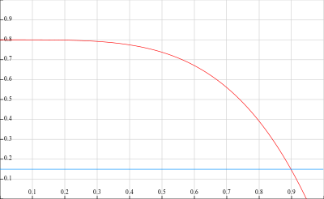
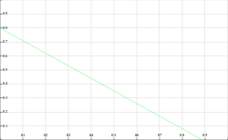
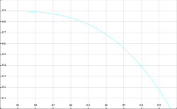
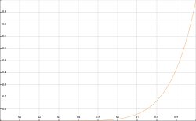
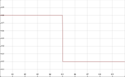
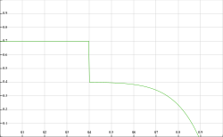
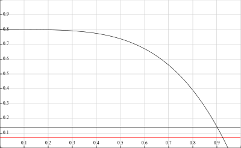
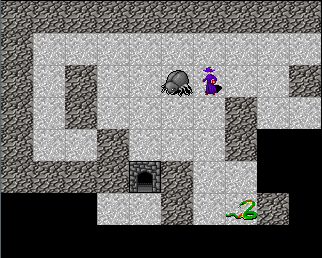

Haskell roguelike - Utility AI
AI
Finally my favorite part of the code. Implementing some form of “AI” was a major part of the reason I decided to make a roguelike in the first place.
As always there are options to choose from
- Hard coded if-then-else logic
- State machines
- Statecharts
- Behaviour trees
- Utility ai
- Genetic algorithms
- Neural networks
- etc.
Hard coded if-then-else logic is too inflexible and in my opinion can be rule out immediately.
State machines for AI have issues
- States are not composable / reusable, so its hard to share logic
- They quickly get out of hand when you start adding more logic, the state explosion problem
- You are always at a state (its in the name!). Its hard to make a reasonable state machine if you need to always/often run a global ruleset. E.g. the actor is in a “hunger” state but “evading capture” should sometimes take precedence.
Statecharts are an option. They resolve many of the state machine flaws. However there are very few good statechart libraries around and implementing them well is far from trivial.
Behaviour trees are another possibility. They handle they global rule issue. However they did seem more complex than utility AI, so I avoided them.
Genetic algorithms and neural networks can more realistically be called AI. However they can mostly be ruled out for rogue likes for several reasons
- Complexity. Non-trivial code, not usually worth the effort given the following issues
- Training. You can’t train them during a game, there are far to few moves / interactions to get reasonable training data
- Predictability. This is the biggest flaw in my opinion. When you are designing your game you will almost certainly want your actor classes to behave in a particular way. Its really hard to see why a neural net acts the way it does and even harder to change it to act subtly differently. Since we almost always want deterministic behaviour why go to the trouble of trying to evolve something to do that.
Utility AI is what I went with. The idea is quite simple to understand and is easy to tweak the settings to get exactly the behaviour you want. Utility AI also handles complex behaviour simply and makes reusing / composing logic trivial.
The trade off between the options here is both complexity and predictability. Utility AI seems to me to get the balance right.
Utility AI
The theory is pretty simple: You have a set of functions that calculate the utility of independent “desires”. E.g. utility of hunger / wanderlust / aggression / healing etc. For each turn you simply select the utility with the highest value.
The utility functions are usually designed to return a normalised value between 0 and 1. They are also most often implemented as a formula which is easy to visualise on a graph
Graphs
The graphs below are from fooplot.com
Infatuation vs Wanderlust
Lets consider two utilities. Infatuation is the utility of following the actor. Wanderlust is the utility of randomly wandering around. To get started lets set their formulas as
- Infatuation:
y = -( (x + 0.2) ^ 4 ) + 0.9 - Wanderlust:
y = 0.15
We can graph this as (with x and y range from 0 to 1)

- For infatuation the input (
x) is the distance to the player normalised to the range 0..1 - For wander the result is always 0.15
At each turn the utilities are evaluated. For example
| normalised distance to player | infatuation value | wander value | select |
|---|---|---|---|
| 0.1 | ~0.8 | 0.15 | infatuation |
| 0.5 | ~0.75 | 0.15 | infatuation |
| 0.8 | ~0.4 | 0.15 | infatuation |
| 0.95 | ~0.05 | 0.15 | wanderlust |
| no player in fov | N/A | 0.15 | wanderlust |
So if the player is in the actors fov the actor will almost always follow the actor, unless the actor is at the limit of the players fov. If there is no player in the actors fov then the utility of infatuation is not applicable (returns 0) so wanderlust gets selected.
Multiple utilities
As you can see with two simple formulas we already get some interesting behavior that is easy to control. It is also easy to add many utilities and we just select the highest scoring one.
Here are a few examples of formulas, perhaps this will give you some ideas. You can also combine these functions (see the last example).
| Formula | |
|---|---|
|  | (0.9 * (-x)) + 0.8 |
|  | 0.9 - (x^3) |
|  | x ^ 8 |
|  | x > 0.5 ? 0.2 : 0.8 |
|  | x > 0.4 ? (0.4 - (x ^ 8)) : 0.7 |
Remember that the only requirement of a utility function is that it returns a value between 0..1. Using simple formulas like the ones above makes for easy to understand logic that is also easy to visualise. However you can write as much complex logic as you like in a utility function. E.g. you may take multiple inputs, rely on history, combine other simple utilities etc.
Implementing a utility system
Types
I’m making the assumption that most utilities are going to decide how to react based on what is around them. Some like wanderlust may not but since the vast majority will I’m going to pass a list of what is around the actor (in fov) to the utility functions rather than having the utility function ask for it.
A Path describes the path to an entity
13_utility/src/UtilityBrain.hs (27 to 30)
path :: PathTo -> Path
path (PathToEntity p _ _) = p
path (PathToActor p _ _) = p
path (PathToPlayer p _ _) = pA PathTo is a path to a particular type of thing
13_utility/src/GameCore.hs (106 to 108)
data PathTo = PathToEntity Path Entity WorldPos
| PathToActor Path Actor WorldPos
| PathToPlayer Path Player WorldPosAn Impulse is what the utility functions “decides” to do. To start with our actor’s impulses are pretty simplistic.
13_utility/src/GameCore.hs (112 to 113)
I’m calling the set of utilities for an actor the utility brain. A utility brain has a disposition which is the set of properties that control a utility.
13_utility/src/GameCore.hs (117 to 121)
data Disposition = Disposition { _dsSmitten :: Float
, _dsWanderlust :: Float
, _dsWanderlustToExits :: Float
, _dsSmittenWith :: [E.EntityType]
} This allows each utility to have configurable values but share the same code. E.g. different actor classes may have a different wanderlust setting but still use the exact same wanderlust utility
Utility functions
As I said above utilities are mostly going to base decisions on where other entities are. So utilities are going to be given a list of paths to entities ([PathTo]) and need to return a score for any impulses resulting from looking at the paths, [(Float, Impulse)]. The actor can return multiple impulses, e.g. one per path, and the evaluation code will select the highest overall.
You can quickly end up with lots of impulses for a single move as there are multiple utilities each possibly generating multiple impulses. While building your game it is a good idea to have a way to see what impulses were generated, which one was selected and why. In the next chapter I’ll show one way of doing this. For now lets simply make sure that each utility function returns plenty of identifying information that we may need.
Rather than [(Float, Impulse)] a utility will create a [(Float, Actor, Impulse, Text, Maybe PathTo)]
[
( Float -- The utility score 0..1
, Actor -- The actor that the utility was run for
, Impulse -- The Impulse to act out
, Text -- Name of the utility
, Maybe PathTo -- The path that resulted in the Impulse, if applicable
)
]One more wrinkle… All the utility functions returns a list of impulses, only one of which is selected. Only that single utility function can thus effect the world. However its easy to imagine a utility that needs to effect the world even if it is not selected. E.g. the actor sees another actor which never attacks them, so a utility of trust could mark that actor’s class as more reliable. For that reason the utility function is given a World and is allowed to modify it.
The final utility function type is then
:: World -- Original world
-> Actor -- Actor that the utility is being run for
-> [PathTo] -- Paths to every entitiy in the actor's fov
-> ( [ ( Float -- The utility score 0..1
, Actor -- The actor that the utility was run for
, Impulse -- The Impulse to act out
, Text -- Name of the utility
, Maybe PathTo -- The path that resulted in the Impulse, if applicable
)]
, World -- Updated world returned
)And now we can add the properties to the actor
13_utility/src/GameCore.hs (40 to 47)
-- | List of utilities in order of execution
-- Note that the world is threaded through the utilities and can be updated (i.e. in the ([], World) result)
-- The array of results has an updated actor and a score. These are speculative, and are only applied
-- if that utility is selected. The world updates are kept even if nothing is selected
, _acUtilities :: ![World -> Actor -> [PathTo] -> ([(Float, Actor, Impulse, Text, Maybe PathTo)], World)]
-- | The actor's disposition - the values that define the actors personality
, _acDisposition :: !DispositionBuilding a utility brain
13_utility/src/UtilityBrain.hs (2 to 23)
{-# OPTIONS_GHC -fno-warn-type-defaults #-}
{-# LANGUAGE NoImplicitPrelude #-}
{-# LANGUAGE OverloadedStrings #-}
{-# LANGUAGE ScopedTypeVariables #-}
{-# LANGUAGE FlexibleContexts #-}
module UtilityBrain ( selectTopUtility
, assessUtilities
, utilityOfInfatuation
, utilityOfWander
, utilityOfWanderToExit
, emptyDisposition
) where
import Protolude
import qualified Data.List as Lst
import qualified System.Random as Rnd
import qualified Control.Arrow as Ar
import Control.Lens
import GameCore
import qualified EntityType as ERank and select top scoring utility
As mentioned above this is the type we’ll be working with for utility function results
Rank
To rank results we only need to look at the first float
13_utility/src/UtilityBrain.hs (79 to 81)
rankUtility :: [(Float, Actor, Impulse, Text, Maybe PathTo)] -> [(Float, Actor, Impulse, Text, Maybe PathTo)]
rankUtility us =
Lst.reverse $ Lst.sortOn (\(x, _, _, _, _) -> x) usI could have rather gone with Lst.sortOn (^. _1) but I’ve decided to leave that as is for now.
Assess
assessUtilities will run all the utility functions for an actor and get a ranked list of results
13_utility/src/UtilityBrain.hs (57 to 74)
-- | See the docs on acUtilities
-- | Mainly that the world is threaded through utilities and any updates are kept even if no/other utilities are selected
-- | The actor in the results are speculative and only the actor for the selected utility gets used
assessUtilities :: [PathTo] -> World -> Actor -> ([(Float, Actor, Impulse, Text, Maybe PathTo)], World)
assessUtilities paths world actor =
let
(rs, wNext) = foldl' assess ([], world) (actor ^. acUtilities)
ranked = rankUtility rs
in
(ranked, wNext)
where
assess (hist, w) u =
let
a = fromMaybe actor $ w ^. wdActors ^.at (actor ^. acId)
(rs, wNext) = u w a paths
in
(hist <> rs, wNext)- The code starts by folding over the actor’s list of utilities calling assess. This creates a list of utilities and a final updated world
- The results are then ranked and returned
- The assess function
- Tries to get an updated actor from the world. Remember that the world is getting updated so it is possible that the actor’s properties were changed. If the actor is not found use the one passed in, this is not ideal but works well enough
- The utility function is then called, the results added to the fold’s accumulator and the latest world returned.
Select best
selectTopUtility gets the highest scoring utility. We could just take the head of the list after rankUtility is called. However its possible for multiple utilities to return the same score. So selectTopUtility will randomly select one of the top scoring utilities. As the scores are floats I’m considering any values within 0.001 of each other to be considered equal.
13_utility/src/UtilityBrain.hs (34 to 52)
selectTopUtility :: [(Float, Actor, Impulse, Text, Maybe PathTo)]
-> Maybe (Float, Actor, Impulse, Text, Maybe PathTo)
selectTopUtility rs =
case rs of
[] -> Nothing
(u@(v0,a0,_,_,_):_) -> do
-- Get the results with the top scores (fuzzy match)
let top = Lst.takeWhile (\(v2,_,_,_,_) -> v2 >= v0 - 0.001) rs
-- Get a random index. Grab a StdGen from the first actor, and ignore the new stdgen, its not important here
let ((idx, _), rndB) =
let (rndA, rndB') = Rnd.split (a0 ^. acStdGen) in
(Rnd.randomR (0, length top - 1) rndA, rndB')
case atMay top idx of
Just (s, a, i, n, p) -> Just (s, a & acStdGen .~ rndB, i, n, p)
Nothing -> Just uUtilities
We can now start to look at implementing a few utilities.
Helpers
But first, some helper functions that will be required
path gets the Path from a PathTo
13_utility/src/UtilityBrain.hs (27 to 30)
path :: PathTo -> Path
path (PathToEntity p _ _) = p
path (PathToActor p _ _) = p
path (PathToPlayer p _ _) = pclamp constrains a value to the 0..1 range, using clampTo
13_utility/src/UtilityBrain.hs (86 to 91)
clamp :: Float -> Float
clamp = clampTo 0.0 1.0
clampTo :: Float -> Float -> Float -> Float
clampTo vmin vmax = min vmax . max vminonlyEntitiesOfType filters a list of PathTo entries by entity type
13_utility/src/UtilityBrain.hs (96 to 101)
onlyEntitiesOfType :: [E.EntityType] -> [PathTo] -> [PathTo]
onlyEntitiesOfType types =
filter go
where
go (PathToEntity _ e _) = e ^. enType `elem` types
go _ = FalseWanderlust
This is the simplest utility, it ignores all paths and returns a single impulse to move randomly. The formula it uses is roughly 0.02 * (10 * dsWanderlust)). The level of desire to wander is controlled by dsWanderlust from the actor’s disposition.
13_utility/src/UtilityBrain.hs (134 to 137)
utilityOfWander :: World -> Actor -> [PathTo] -> ([(Float, Actor, Impulse, Text, Maybe PathTo)], World)
utilityOfWander world actor _paths =
let rule = clamp $ 0.02 * (10 * clamp (actor ^. acDisposition ^. dsWanderlust)) in
([(rule, actor, ImpMoveRandom, "wander", Nothing)], world)Wander to exit
Wanderlust is simple but, wandering towards an exit seems more useful/interesting
13_utility/src/UtilityBrain.hs (142 to 148)
utilityOfWanderToExit :: World -> Actor -> [PathTo] -> ([(Float, Actor, Impulse, Text, Maybe PathTo)], World)
utilityOfWanderToExit world actor allPaths =
let
rule x = clamp $ 1 - (0.04 * x + (1.24 - clamp (actor ^. acDisposition ^. dsWanderlustToExits)))
clampedResults = moveTowardsUtil [E.Door] rule allPaths actor
in
((\(p, score) -> (score, actor, ImpMoveTowards (path p), "wander to exit", Just p)) <$> clampedResults, world)The formula is 1 - (0.04 * distance_to_exit + (1.24 - dsWanderToExits)). As you can see this utility has two variables, the distance_to_exit value and the dsWanderToExits setting.
The utility call moveTowardsUtil which is discussed below, and then returns an impulse to follow the path to the exit, for each one found.
Infatuation
13_utility/src/UtilityBrain.hs (153 to 159)
utilityOfInfatuation :: World -> Actor -> [PathTo] -> ([(Float, Actor, Impulse, Text, Maybe PathTo)], World)
utilityOfInfatuation world actor allPaths =
let
rule x = clamp $ -x ** 4 + clamp (actor ^. acDisposition ^. dsSmitten)
clampedResults = moveTowardsUtil (actor ^. acDisposition ^. dsSmittenWith) rule allPaths actor
in
((\(p, score) -> (score, actor, ImpMoveTowards (path p), "infatuation", Just p)) <$> clampedResults, world)The infatuation utility is very similar to the wander to exit utility. The formula here is -(distance_to_dsSmittenWith ^ 4) + dsSmitten
Moving towards an entity
13_utility/src/UtilityBrain.hs (164 to 177)
moveTowardsUtil :: [E.EntityType] -> (Float -> Float) -> [PathTo] -> Actor -> [(PathTo, Float)]
moveTowardsUtil es rule paths actor =
let
-- Find exits
goalPaths = onlyEntitiesOfType es paths
-- Normalise distances
pathsNormalisedMay = (\p -> (p, distanceToRange p (actor ^. acFovDistance))) <$> goalPaths
pathsNormalised = catNormalisedMay pathsNormalisedMay
-- Run utility calculation
results = Ar.second rule <$> pathsNormalised
clampedResults = Ar.second clamp <$> results
in
clampedResults- Find the entities the utility is interested in
- Get a normalised distance to the entity using distanceToRange
- Run the utility calculation given the distance to the entity
- Return scores
13_utility/src/UtilityBrain.hs (182 to 188)
catNormalisedMay :: [(PathTo, Maybe float)] -> [(PathTo, float)]
catNormalisedMay ps =
catMaybes $ go <$> ps
where
go (_, Nothing) = Nothing
go (p, Just v) = Just (p, v) - Get all paths with a score:
[(PathTo, Maybe float)] -> [(PathTo, float)]
Getting a 0..1 value from a distance
To get a value in the range 0..1 for a distance, we need to calculate how far towards the end of the actor’s fov the entity is. To do this we calculate the cartesian distance to the entity, and the maximum cartesian distance to the edge of the player’s fov. The 0..1 value is then distance / maxDistance
13_utility/src/UtilityBrain.hs (114 to 129)
distanceToRange :: PathTo -> Int -> Maybe Float
distanceToRange pt fov =
let (Path p) = path pt in
case (p, Lst.reverse p) of
([], _) -> Nothing
(_, []) -> Nothing
(WorldPos (fx, fy) : _, WorldPos (tx, ty) : _) ->
if fx == tx && fy == ty
then
Nothing
else
-- Distance to point
let distance = sqrt . fromIntegral $ ((tx - fx) ^ 2) + ((ty - fy) ^ 2) in
-- Max distance for fov, i.e. cartesian distance to a corner of the fov
let maxDist = sqrt ((fromIntegral fov ** 2) * 2) in
Just $ distance / maxDistGraphs
So far this is what the three utilities look like. This is assuming that the utility of infatuation is given a distance of 0.5

As your utilities get more complex they get harder to graph, but I’ve still found it useful to graph what I can to visualise how they interact. In the next chapter I’ll look at a way to trace what is happening.
Using utility brains
Having built the utility system all that is left is to use it in the engine.
Find everything in a fov
For every path in a field of view call findPaths, which creates a list of PathTo items.
13_utility/src/GameEngine.hs (862 to 901)
findPathToAllInFov :: World -> Actor -> [PathTo]
findPathToAllInFov w a =
case a ^. acFov of
Nothing -> []
Just fov ->
let wmap = addActorsToMap w in
concat (findPaths wmap <$> fov)
where
findPaths :: Map WorldPos Entity -> (WorldPos, [WorldPos]) -> [PathTo]
findPaths wmap (dest, points) =
snd $ foldl'
(\(trail, paths) atPos -> (trail <> [atPos], paths <> findAt dest wmap (trail <> [atPos]) atPos))
([], [])
points
findAt :: WorldPos -> Map WorldPos Entity -> [WorldPos] -> WorldPos -> [PathTo]
findAt dest wmap trail atPos =
let ps = if atPos == w ^. wdPlayer ^. plActor ^. acWorldPos
then [ PathToPlayer (Path trail) (w ^. wdPlayer) dest
, PathToActor (Path trail) (w ^. wdPlayer ^. plActor) dest
]
else []
in
let es = case wmap ^.at atPos of
Nothing -> []
Just e -> if e ^. enType == E.Blank
then []
else [PathToEntity (Path trail) e dest]
in
ps <> es
addActorsToMap :: World -> Map WorldPos Entity
addActorsToMap w =
foldr
(\a g -> Map.insert (a ^. acWorldPos) (a ^. acEntity) g)
(w ^. wdMap)
(getAllActors w)Act on impulse
Selecting the top utility gives us the Impulse to act to. actOnImpulse is the function that handles this
13_utility/src/GameEngine.hs (816 to 851)
actOnImpulse :: Int -> World -> Actor -> Impulse -> World
actOnImpulse cost w actorIfMoved impulse =
let (dx, dy, nextStdGen) =
let initialStdGen = (actorIfMoved ^. acStdGen) in
case impulse of
ImpMoveRandom ->
let
(dx', s1) = Rnd.randomR (-1, 1) initialStdGen
(dy', s2) = Rnd.randomR (-1, 1) s1
in
(dx', dy', s2)
ImpMoveTowards (Path ps) ->
case ps of
(_:WorldPos (tx, ty):_) ->
let (WorldPos (fx, fy)) = actorIfMoved ^. acWorldPos in
(tx - fx, ty - fy, initialStdGen)
_ -> (0, 0, initialStdGen)
in
if dx /=0 || dy /= 0
then
let worldIfMoved = w & wdActors %~ Map.insert (actorIfMoved ^. acId) actorIfMoved in
case tryMoveActor worldIfMoved actorIfMoved (dx, dy) of
Nothing ->
w & wdActors %~ Map.adjust (\a' -> a' & acStdGen .~ nextStdGen) (actorIfMoved ^. acId)
Just w' ->
w' & wdActors %~ Map.adjust (\a' -> updateActorFov w' $ a' & acEnergy %~ B.update (subtract cost)
& acStdGen .~ nextStdGen
)
(actorIfMoved ^. acId)
else
w & wdActors %~ Map.adjust (\a' -> a' & acStdGen .~ nextStdGen) (actorIfMoved ^. acId)- Get a delta (x, y) for a ImpMoveRandom or ImpMoveTowards
- Try perform the move
Energy system update
Previously the energy system moved the non-player actors around randomly. Now we can plug in the utility system and get slightly smarter behaviour. moveAllNonPlayers is updated in playerMoving to be
13_utility/src/GameEngine.hs (755 to 781)
moveAllNonPlayers w =
let mv aOrig wOrig =
let
inFov = findPathToAllInFov wOrig aOrig
(utilities, wNext) = UB.assessUtilities inFov wOrig aOrig
in
case UB.selectTopUtility utilities of
Nothing ->
-- No utility = no move, skip
updateActorById wNext (aOrig ^. acId) (\a -> a & acSkipMove .~ True)
Just (_, actorIfMoved, action, _, _) ->
let cost = floor . fromIntegral $ aOrig ^. acMoveEnergyCost in
if cost > B.get (aOrig ^. acEnergy)
then
-- Not enough energy to move, disallow. Set skipMove = True so this is not attempted again before
-- the next actor move (i.e. avoid looping)
wNext & wdActors %~ Map.insert (aOrig ^. acId) (aOrig & acSkipMove .~ True)
else
actOnImpulse cost wNext actorIfMoved action
in
let actorsThatCanMove = filter
(\a -> B.get (a ^. acEnergy) >= (w ^. wdMinMoveEnergy) && not (a ^. acSkipMove))
(Map.elems $ w ^. wdActors)- Assess utilities
- Get the top scoring one
- Move if the actor has enough energy
Result
Here is the final result. You can see the bug following the player and the snake going to the door.

Chapters
Changes
src/GameCore.hs
diff -w -B -a -d -u -b --new-file 12_energy/src/GameCore.hs 13_utility/src/GameCore.hs
--- 12_energy/src/GameCore.hs
+++ 13_utility/src/GameCore.hs
@@ -32,11 +32,20 @@
, _acFov :: !(Maybe [(WorldPos, [WorldPos])])
, _acFovHistory :: !(Set WorldPos)
, _acFovDistance :: !Int
-
, _acEnergy :: !B.BInt -- ^ available energy, bounded
, _acMoveEnergyCost :: !Int
, _acSkipMove :: !Bool
+
+ -- | List of utilities in order of execution
+ -- Note that the world is threaded through the utilities and can be updated (i.e. in the ([], World) result)
+ -- The array of results has an updated actor and a score. These are speculative, and are only applied
+ -- if that utility is selected. The world updates are kept even if nothing is selected
+ , _acUtilities :: ![World -> Actor -> [PathTo] -> ([(Float, Actor, Impulse, Text, Maybe PathTo)], World)]
+
+ -- | The actor's disposition - the values that define the actors personality
+ , _acDisposition :: !Disposition
+
}
data Player = Player { _plConn :: !Host.Connection
@@ -86,6 +93,39 @@
deriving (Show, Eq)
+
+
+----------------------------------------------------------------------------------------
+-- Utility brain types
+----------------------------------------------------------------------------------------
+
+newtype Path = Path [WorldPos] deriving (Show)
+
+
+
+data PathTo = PathToEntity Path Entity WorldPos
+ | PathToActor Path Actor WorldPos
+ | PathToPlayer Path Player WorldPos
+
+
+
+data Impulse = ImpMoveTowards Path
+ | ImpMoveRandom
+
+
+
+data Disposition = Disposition { _dsSmitten :: Float
+ , _dsWanderlust :: Float
+ , _dsWanderlustToExits :: Float
+ , _dsSmittenWith :: [E.EntityType]
+ }
+
+----------------------------------------------------------------------------------------
+
+
+----------------------------------------------------------------------------------------
+-- UI types
+----------------------------------------------------------------------------------------
data UiMessage = UiMessage { umCmd :: !Text
, umMessage :: !Text
}
@@ -137,7 +177,7 @@
Txt.unpack . (if toLower then mkLower else identity) . Txt.drop drp . Txt.pack
where
mkLower t = Txt.toLower (Txt.take 1 t) <> Txt.drop 1 t
-
+----------------------------------------------------------------------------------------
makeLenses ''World
makeLenses ''Config
@@ -145,3 +185,4 @@
makeLenses ''Entity
makeLenses ''Tile
makeLenses ''Actor
+makeLenses ''Disposition
src/GameEngine.hs
diff -w -B -a -d -u -b --new-file 12_energy/src/GameEngine.hs 13_utility/src/GameEngine.hs
--- 12_energy/src/GameEngine.hs
+++ 13_utility/src/GameEngine.hs
@@ -1,3 +1,4 @@
+{-# OPTIONS_GHC -fno-warn-type-defaults #-}
{-# LANGUAGE NoImplicitPrelude #-}
{-# LANGUAGE OverloadedStrings #-}
{-# LANGUAGE MultiWayIf #-}
@@ -27,6 +28,7 @@
import qualified Entities as E
import qualified EntityType as E
import qualified BoundedInt as B
+import qualified UtilityBrain as UB
runGame :: IO ()
@@ -83,8 +85,19 @@
bootWorld conn screenSize mapData std =
let
config = mkConfig
- bug = mkEnemyActor "bug1" E.Bug (6, -2)
- snake = mkEnemyActor "snake1" E.Snake (8, -4)
+ bug = mkEnemyActor "bug1" E.Bug (6, -2) & acUtilities .~ [UB.utilityOfInfatuation, UB.utilityOfWander, UB.utilityOfWanderToExit]
+ & acDisposition .~ Disposition { _dsSmitten = 0.8
+ , _dsWanderlust = 0.35
+ , _dsWanderlustToExits = 0.4
+ , _dsSmittenWith = [E.Player]
+ }
+
+ snake = mkEnemyActor "snake1" E.Snake (8, -4) & acUtilities .~ [UB.utilityOfWander, UB.utilityOfWanderToExit]
+ & acDisposition .~ Disposition { _dsSmitten = 0
+ , _dsWanderlust = 0.35
+ , _dsWanderlustToExits = 0.4
+ , _dsSmittenWith = []
+ }
w1 = World { _wdPlayer = mkPlayer
, _wdConfig = config
@@ -147,11 +158,11 @@
, _acFovDistance = 3
, _acFov = Nothing
, _acFovHistory = Set.empty
-
, _acSkipMove = False
, _acMoveEnergyCost = 100
, _acEnergy = B.new 200 100
-
+ , _acUtilities = []
+ , _acDisposition = UB.emptyDisposition
}
mkEnemyActor aid e (x, y) =
@@ -163,11 +174,11 @@
, _acFovDistance = 2
, _acFov = Nothing
, _acFovHistory = Set.empty
-
, _acSkipMove = False
, _acMoveEnergyCost = 150
, _acEnergy = B.new 180 100
-
+ , _acUtilities = []
+ , _acDisposition = UB.emptyDisposition
}
@@ -754,35 +752,34 @@
runNonPlayerActorLoop $ updateAllActors w' addEnergy
-
moveAllNonPlayers w =
+ let mv aOrig wOrig =
let
- -- Random directions the actors could move in (no diagonal moves)
- directions = [(-1,0), (0,-1), (0,1), (1,0)]
-
- -- Other actors just try to move in random directions
- mv aOrig wOrig =
- let
- -- Pick a random direction to move
- (dir, nextStd) = randomElement (aOrig ^. acStdGen) directions
- -- Try move, i.e. if there is no wall / actor in the way
- w2 = tryMoveActor wOrig aOrig $ fromMaybe (0, 0) dir
+ inFov = findPathToAllInFov wOrig aOrig
+ (utilities, wNext) = UB.assessUtilities inFov wOrig aOrig
in
- case w2 of
+
+ case UB.selectTopUtility utilities of
Nothing ->
- -- Unable to move, so skip a turn. This accumulates energy for the next attempt
- -- Also update the stdgen for the next time a random number is needed
- updateActor wOrig $ aOrig & acSkipMove .~ True
- & acStdGen .~ nextStd
+ -- No utility = no move, skip
+ updateActorById wNext (aOrig ^. acId) (\a -> a & acSkipMove .~ True)
- Just w2' ->
- -- The actor moved, use the new world but remember to update the stdgen
- updateActorById w2' (aOrig ^. acId) (\a -> a & acStdGen .~ nextStd)
+ Just (_, actorIfMoved, action, _, _) ->
+ let cost = floor . fromIntegral $ aOrig ^. acMoveEnergyCost in
- -- All actors that have enough energy to move and are not skipping a turn
- actorsThatCanMove = filter
+ if cost > B.get (aOrig ^. acEnergy)
+ then
+ -- Not enough energy to move, disallow. Set skipMove = True so this is not attempted again before
+ -- the next actor move (i.e. avoid looping)
+ wNext & wdActors %~ Map.insert (aOrig ^. acId) (aOrig & acSkipMove .~ True)
+ else
+ actOnImpulse cost wNext actorIfMoved action
+ in
+
+ let actorsThatCanMove = filter
(\a -> B.get (a ^. acEnergy) >= (w ^. wdMinMoveEnergy) && not (a ^. acSkipMove))
(Map.elems $ w ^. wdActors)
+
in
-- Are the any actors that could still move?
if null actorsThatCanMove
@@ -814,16 +808,95 @@
else
w
-
-
disableSkip w =
updateAllActors w (\_ a -> a & acSkipMove .~ False)
+actOnImpulse :: Int -> World -> Actor -> Impulse -> World
+actOnImpulse cost w actorIfMoved impulse =
+ let (dx, dy, nextStdGen) =
+ let initialStdGen = (actorIfMoved ^. acStdGen) in
+
+ case impulse of
+ ImpMoveRandom ->
+ let
+ (dx', s1) = Rnd.randomR (-1, 1) initialStdGen
+ (dy', s2) = Rnd.randomR (-1, 1) s1
+ in
+ (dx', dy', s2)
+
+ ImpMoveTowards (Path ps) ->
+ case ps of
+ (_:WorldPos (tx, ty):_) ->
+ let (WorldPos (fx, fy)) = actorIfMoved ^. acWorldPos in
+ (tx - fx, ty - fy, initialStdGen)
+ _ -> (0, 0, initialStdGen)
+
+ in
+ if dx /=0 || dy /= 0
+ then
+ let worldIfMoved = w & wdActors %~ Map.insert (actorIfMoved ^. acId) actorIfMoved in
+
+ case tryMoveActor worldIfMoved actorIfMoved (dx, dy) of
+ Nothing ->
+ w & wdActors %~ Map.adjust (\a' -> a' & acStdGen .~ nextStdGen) (actorIfMoved ^. acId)
+
+ Just w' ->
+ w' & wdActors %~ Map.adjust (\a' -> updateActorFov w' $ a' & acEnergy %~ B.update (subtract cost)
+ & acStdGen .~ nextStdGen
+ )
+ (actorIfMoved ^. acId)
+ else
+ w & wdActors %~ Map.adjust (\a' -> a' & acStdGen .~ nextStdGen) (actorIfMoved ^. acId)
+
+
randomElement :: Rnd.StdGen -> [a] -> (Maybe a, Rnd.StdGen)
randomElement g as =
let (i, next) = Rnd.randomR (0, length as - 1) g in
(atMay as i, next)
+
+
+findPathToAllInFov :: World -> Actor -> [PathTo]
+findPathToAllInFov w a =
+ case a ^. acFov of
+ Nothing -> []
+ Just fov ->
+ let wmap = addActorsToMap w in
+ concat (findPaths wmap <$> fov)
+
+ where
+ findPaths :: Map WorldPos Entity -> (WorldPos, [WorldPos]) -> [PathTo]
+ findPaths wmap (dest, points) =
+ snd $ foldl'
+ (\(trail, paths) atPos -> (trail <> [atPos], paths <> findAt dest wmap (trail <> [atPos]) atPos))
+ ([], [])
+ points
+
+
+ findAt :: WorldPos -> Map WorldPos Entity -> [WorldPos] -> WorldPos -> [PathTo]
+ findAt dest wmap trail atPos =
+ let ps = if atPos == w ^. wdPlayer ^. plActor ^. acWorldPos
+ then [ PathToPlayer (Path trail) (w ^. wdPlayer) dest
+ , PathToActor (Path trail) (w ^. wdPlayer ^. plActor) dest
+ ]
+ else []
+ in
+ let es = case wmap ^.at atPos of
+ Nothing -> []
+ Just e -> if e ^. enType == E.Blank
+ then []
+ else [PathToEntity (Path trail) e dest]
+ in
+ ps <> es
+
+
+addActorsToMap :: World -> Map WorldPos Entity
+addActorsToMap w =
+ foldr
+ (\a g -> Map.insert (a ^. acWorldPos) (a ^. acEntity) g)
+ (w ^. wdMap)
+ (getAllActors w)
+
src/UtilityBrain.hs
diff -w -B -a -d -u -b --new-file 12_energy/src/UtilityBrain.hs 13_utility/src/UtilityBrain.hs
--- 12_energy/src/UtilityBrain.hs
+++ 13_utility/src/UtilityBrain.hs
@@ -0,0 +1,190 @@
+
+{-# OPTIONS_GHC -fno-warn-type-defaults #-}
+{-# LANGUAGE NoImplicitPrelude #-}
+{-# LANGUAGE OverloadedStrings #-}
+{-# LANGUAGE ScopedTypeVariables #-}
+{-# LANGUAGE FlexibleContexts #-}
+
+module UtilityBrain ( selectTopUtility
+ , assessUtilities
+ , utilityOfInfatuation
+ , utilityOfWander
+ , utilityOfWanderToExit
+ , emptyDisposition
+ ) where
+
+import Protolude
+import qualified Data.List as Lst
+import qualified System.Random as Rnd
+import qualified Control.Arrow as Ar
+import Control.Lens
+
+import GameCore
+import qualified EntityType as E
+
+
+
+path :: PathTo -> Path
+path (PathToEntity p _ _) = p
+path (PathToActor p _ _) = p
+path (PathToPlayer p _ _) = p
+
+
+
+selectTopUtility :: [(Float, Actor, Impulse, Text, Maybe PathTo)]
+ -> Maybe (Float, Actor, Impulse, Text, Maybe PathTo)
+selectTopUtility rs =
+ case rs of
+ [] -> Nothing
+
+ (u@(v0,a0,_,_,_):_) -> do
+ -- Get the results with the top scores (fuzzy match)
+ let top = Lst.takeWhile (\(v2,_,_,_,_) -> v2 >= v0 - 0.001) rs
+
+ -- Get a random index. Grab a StdGen from the first actor, and ignore the new stdgen, its not important here
+ let ((idx, _), rndB) =
+ let (rndA, rndB') = Rnd.split (a0 ^. acStdGen) in
+ (Rnd.randomR (0, length top - 1) rndA, rndB')
+
+ case atMay top idx of
+ Just (s, a, i, n, p) -> Just (s, a & acStdGen .~ rndB, i, n, p)
+
+ Nothing -> Just u
+
+
+
+
+-- | See the docs on acUtilities
+-- | Mainly that the world is threaded through utilities and any updates are kept even if no/other utilities are selected
+-- | The actor in the results are speculative and only the actor for the selected utility gets used
+assessUtilities :: [PathTo] -> World -> Actor -> ([(Float, Actor, Impulse, Text, Maybe PathTo)], World)
+assessUtilities paths world actor =
+ let
+ (rs, wNext) = foldl' assess ([], world) (actor ^. acUtilities)
+ ranked = rankUtility rs
+ in
+ (ranked, wNext)
+
+ where
+ assess (hist, w) u =
+ let
+ a = fromMaybe actor $ w ^. wdActors ^.at (actor ^. acId)
+ (rs, wNext) = u w a paths
+ in
+ (hist <> rs, wNext)
+
+
+
+
+rankUtility :: [(Float, Actor, Impulse, Text, Maybe PathTo)] -> [(Float, Actor, Impulse, Text, Maybe PathTo)]
+rankUtility us =
+ Lst.reverse $ Lst.sortOn (\(x, _, _, _, _) -> x) us
+
+
+
+
+clamp :: Float -> Float
+clamp = clampTo 0.0 1.0
+
+
+clampTo :: Float -> Float -> Float -> Float
+clampTo vmin vmax = min vmax . max vmin
+
+
+
+
+onlyEntitiesOfType :: [E.EntityType] -> [PathTo] -> [PathTo]
+onlyEntitiesOfType types =
+ filter go
+ where
+ go (PathToEntity _ e _) = e ^. enType `elem` types
+ go _ = False
+
+
+
+emptyDisposition :: Disposition
+emptyDisposition = Disposition { _dsSmitten = 0
+ , _dsWanderlust = 0
+ , _dsWanderlustToExits = 0
+ , _dsSmittenWith = []
+ }
+
+
+
+distanceToRange :: PathTo -> Int -> Maybe Float
+distanceToRange pt fov =
+ let (Path p) = path pt in
+ case (p, Lst.reverse p) of
+ ([], _) -> Nothing
+ (_, []) -> Nothing
+ (WorldPos (fx, fy) : _, WorldPos (tx, ty) : _) ->
+ if fx == tx && fy == ty
+ then
+ Nothing
+ else
+ -- Distance to point
+ let distance = sqrt . fromIntegral $ ((tx - fx) ^ 2) + ((ty - fy) ^ 2) in
+ -- Max distance for fov, i.e. cartesian distance to a corner of the fov
+ let maxDist = sqrt ((fromIntegral fov ** 2) * 2) in
+ Just $ distance / maxDist
+
+
+
+
+utilityOfWander :: World -> Actor -> [PathTo] -> ([(Float, Actor, Impulse, Text, Maybe PathTo)], World)
+utilityOfWander world actor _paths =
+ let rule = clamp $ 0.02 * (10 * clamp (actor ^. acDisposition ^. dsWanderlust)) in
+ ([(rule, actor, ImpMoveRandom, "wander", Nothing)], world)
+
+
+
+
+utilityOfWanderToExit :: World -> Actor -> [PathTo] -> ([(Float, Actor, Impulse, Text, Maybe PathTo)], World)
+utilityOfWanderToExit world actor allPaths =
+ let
+ rule x = clamp $ 1 - (0.04 * x + (1.24 - clamp (actor ^. acDisposition ^. dsWanderlustToExits)))
+ clampedResults = moveTowardsUtil [E.Door] rule allPaths actor
+ in
+ ((\(p, score) -> (score, actor, ImpMoveTowards (path p), "wander to exit", Just p)) <$> clampedResults, world)
+
+
+
+
+utilityOfInfatuation :: World -> Actor -> [PathTo] -> ([(Float, Actor, Impulse, Text, Maybe PathTo)], World)
+utilityOfInfatuation world actor allPaths =
+ let
+ rule x = clamp $ -x ** 4 + clamp (actor ^. acDisposition ^. dsSmitten)
+ clampedResults = moveTowardsUtil (actor ^. acDisposition ^. dsSmittenWith) rule allPaths actor
+ in
+ ((\(p, score) -> (score, actor, ImpMoveTowards (path p), "infatuation", Just p)) <$> clampedResults, world)
+
+
+
+
+moveTowardsUtil :: [E.EntityType] -> (Float -> Float) -> [PathTo] -> Actor -> [(PathTo, Float)]
+moveTowardsUtil es rule paths actor =
+ let
+ -- Find exits
+ goalPaths = onlyEntitiesOfType es paths
+
+ -- Normalise distances
+ pathsNormalisedMay = (\p -> (p, distanceToRange p (actor ^. acFovDistance))) <$> goalPaths
+ pathsNormalised = catNormalisedMay pathsNormalisedMay
+ -- Run utility calculation
+ results = Ar.second rule <$> pathsNormalised
+ clampedResults = Ar.second clamp <$> results
+ in
+ clampedResults
+
+
+
+
+catNormalisedMay :: [(PathTo, Maybe float)] -> [(PathTo, float)]
+catNormalisedMay ps =
+ catMaybes $ go <$> ps
+
+ where
+ go (_, Nothing) = Nothing
+ go (p, Just v) = Just (p, v)
+
+